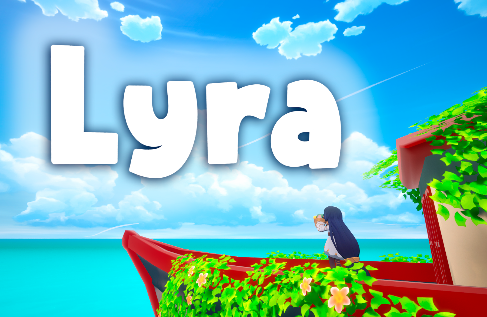

Lyra
A puzzle adventure about experimentation, observation and learning through play.


Lyra
La Mapachanda · TFG · 2025–2026
Lyra es un proyecto de desarrollo de videojuegos centrado en puzzles, experimentación y diseño de niveles. Como proyecto de TFG, mi trabajo se centró en construir las mecánicas, diseñar los niveles y validar las decisiones de diseño mediante datos reales de juego.
Mi responsabilidad principal fue conectar el diseño con la implementación: crear las mecánicas, estructurar la progresión de los niveles y desarrollar herramientas de telemetría que permitieran comprobar qué funcionaba realmente.
Task Overview
- Game Design Diseño de mecánicas, interacciones y reglas de los puzzles.
- Level Design Diseño y estructuración de las tres zonas siguiendo una progresión EDPV.
- Programming Implementación de mecánicas y sistemas en Unreal Engine 5.
- Research Telemetría, experimentación A/B y análisis estadístico de resultados.
Mis Contribuciones
Lyra era mi TFG, así que era el responsable de las mecánicas, los niveles y de demostrar que ambos funcionaban de verdad. El hilo conductor era negarme a fiarme de mi intuición sin datos detrás.
- Pattern-Based Dictionary Descompuse cada mecánica en interacciones atómicas (tiro de fuego, tiro de agua, lanzamiento de dragón) y catalogué los patrones que forman al combinarse, para que cada sala enseñara una combinación concreta y no un truco aislado.
- Estructura de niveles EDPV Apliqué el modelo Exposure, Demonstration, Practice, Validation en las tres zonas temáticas, ordenando dificultad y ritmo emocional de forma deliberada y no por intuición.
- Pipeline de telemetría en C++ Instrumenté Unreal Engine 5 para capturar posición del jugador y acciones como CSV estructurado, dándome datos reales de comportamiento en vez de anécdotas.
- Test A/B controlado Diseñé el experimento completo para el Puzzle 6: asignación aleatoria estratificada, criterios de inclusión, script de moderador y consentimiento informado, comparando el layout original con un rediseño con visual guidance más claro.
- Análisis estadístico en Python Ejecuté Shapiro-Wilk, t de Student y d de Cohen, y reporté un p-valor no significativo junto con un tamaño de efecto grande en vez de solo el resultado que apoyaba mi hipótesis.
- Resultado medido El rediseño redujo los errores de navegación en un 35% y mejoró el tiempo de resolución en un 33%, medido con el mismo pipeline de telemetría.
Lo que aprendí
Lo más valioso no fue confirmar mi hipótesis. Fue aprender a separar lo que se siente mejor de lo que es demostrablemente mejor, y a comunicar esa zona gris a un equipo de diseño sin inflarla ni descartarla.